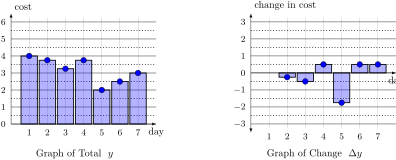
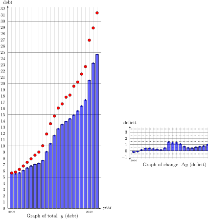
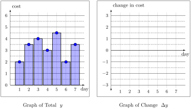

Section 2.1 Combining Functions
The “big idea” behind all of algebra is the use of a symbols to represent a different object. The simplest thing you can do in algebra is to replace the symbol with the value it represents, often called “plugging in” the value.
Exploration 2.1.
Let \(f(x) = x^2 - 3x\text{.}\)
(a)
Evaluate \(f(5)\text{,}\) and simplify completely.
Solution.
The expression \(f(5)\) is really an instruction to take the definition of \(f(x) = x^2 - 3x\text{,}\) and to replace every occurance of \(x\) with the value \(5\text{.}\) Performing this subsitution, and the simplifying, gives
\begin{align*}
f(5) \amp= 5^2 - 3\cdot 5\\
\amp= 25 - 15\\
\amp= 10
\end{align*}
(b)
Evaluate \(f(5+h)\text{,}\) and simplify completely.
Solution.
Again, the expression \(f(5+h)\) is really an instruction to take the definition of \(f(x) = x^2 - 3x\text{,}\) and to replace every occurance of \(x\) with the value \((5+h)\text{.}\) Performing this subsitution, gives the expression
\begin{equation*}
f(5+h) = (5+h)^2 - 3\cdot (5+h)
\end{equation*}
It is very important to include parentheses when you are subtituting \(x\) with the term \((5+h)\text{.}\)
To simplify this expression, you should separately simplify the first term and the second term. Expanding out (FOIL-ing) the first term gives
\begin{equation*}
(5+h)^2 = (5+h)\cdot(5+h) = 5\cdot 5 + 5\cdot h + h\cdot 5 + h\cdot h = 25 + 10h +h^2\text{.}
\end{equation*}
Distributing out the second term gives
\begin{equation*}
3\cdot (5+h) = 3\cdot 5 + 3\cdot h = 15 + 3h
\end{equation*}
Putting it all together we get
\begin{align*}
f(5+h) \amp= (5+h)^2 - 3\cdot (5+h) \\
\amp= (25+10h+h^2) - (15+3h) \\
\amp= 25 + 10h + h^2 - 15 - 3h \\
\amp= 10 + 7h + h^2
\end{align*}
Note: Whenever substituing an expression into another expression, such as when we substitued the simplifications for \((5+h)^2\) and \(3\cdot (5+h)\) above, you must always include parentheses around each term. Above, that helped us remember that we needed to distribute the subtraction to both terms of \(15+3h\text{.}\)
(c)
Evaluate \(f(x^5)\text{,}\) and simplify completely.
Solution.
Again, the expression \(f(x^5)\) is really an instruction to take the definition of \(f(x) = x^2 - 3x\text{,}\) and to replace every occurance of \(x\) with the value \(x^5\text{.}\) Performing this subsitution, gives the expression
\begin{equation*}
f(x^5) = (x^5)^2 - 3\cdot (x^5)
\end{equation*}
We could separately simplify the first and second term as before, or we can do it all together in a single sequence of steps. You can take whichever approach you are most comfortable with.
\begin{align*}
f(x^5) \amp= (x^5)^2 - 3\cdot (x^5) \\
\amp= x^5 \cdot x^5 - 3 x^5 \\
\amp= x^{5+5} - 3x^5 \\
\amp= x^{10} - 3x^5
\end{align*}
Note that in our last example, we plugged a expression for x into another expression for x. In the language of
Chapter 1, that means we plugged one function into another. In mathematics, we call this process of plugging one function into another "composing" the functions.
Exploration 2.2.
Let \(f(x) = \dfrac{1}{x}\) and \(g(x) = x+5\text{.}\) Compute \(f\Big(g(x)\Big)\text{.}\)
Solution.
The problem asks us to evaluate the result of plugging the function \(g(x)=x+5\) into the every occurance of \(x\) in the equation \(f(x) = \dfrac{1}{x}\)
First, we can look at \(f\Big(g(x)\Big)\text{,}\) and notice that we have already been told that the expression \(g(x)\) refers to \((x+5)\text{.}\) As a result, we can replace the argument to \(f\) as follows
\begin{equation*}
f\Big(g(x)\Big) = f\Big( x+5 \Big)
\end{equation*}
Next, we just replace every ocurance of \(x\) in the definition \(f(x) = \dfrac{1}{x}\) with the expression \((x+5)\text{.}\) This gives
\begin{equation*}
f\Big(x+5\Big) = \dfrac{1}{( x+5)}
\end{equation*}
Putting it all together, we get
\begin{align*}
f\Big(g(x)\Big) \amp= f\Big( x+5 \Big) \\
\amp= \dfrac{1}{( x+5)}
\end{align*}
We’ll need to do a lot of composition later in the semester. For now, we will use these concepts to practice our algebra skills.
Exploration 2.3.
Let \(f(x) = 3x^2 - x + 1\text{.}\) Simplify the following expressions completely
(a)
\(f(2)\)
Solution.
\(f(2) = 3\cdot (2)^2 - (2) + 1 = 12 - 2 + 1 = 11\)
(b)
\(f(2+h)\)
Solution.
\begin{align*}
f(2+h) \amp = 3\cdot (2+h)^2 - (2+h) + 1\\
\amp = 3\cdot (2+h)\cdot (2 + h) - 2 - h + 1\\
\amp = 3\cdot (4 + 4h + h^2) - 2 - h + 1\\
\amp = 12 + 12h + 3h^2 - 2 - h + 1\\
\amp = 3h^2 + 11h + 11
\end{align*}
(c)
\(\dfrac{f(2+h)-f(2)}{h}\)
Solution.
This expression is slightly more complex. The key idea is to realize that the numerator contains two separate expressions \(f(2+h)\) and \(f(2)\text{,}\) and that we have already found that they equal \((3h^2+11h+11)\) and \((11)\) respectively. Making the appropriate replacements gives
\begin{equation*}
\dfrac{f(2+h)-f(2)}{h} = \dfrac{(3h^2+11h+11)-(11)}{h}
\end{equation*}
Now we can use basic algebra to simplify the expression as before.
\begin{align*}
\amp = \dfrac{3h^2+11h}{h}\\
\amp = \dfrac{h(3h+11)}{h}\\
\amp = \dfrac{h}{h}\cdot \dfrac{3h+11}{1}\\
\amp = 3h+11
\end{align*}
The previous example is complicated because it combines a number of different kinds of steps. To see what’s going on, it can help to think of these different steps separately.
Exploration 2.4.
Let \(f(x) = 2x^2-4x\) and \(g(x)=2x-4\text{.}\) Simplify the following expressions completely.
(a)
\(f(x)+g(x)\)
Solution.
To evaluate the expression \(f(x)+g(x)\text{,}\) first replace \(f(x)\) with the expression \((2x^2-4x)\text{,}\) and replace \(g(x)\) with the expression \((2x-4)\text{.}\) Then, simplify the remaining expression completely using algebra.
\begin{align*}
f(x)+g(x)\amp =(2x^2-4x) + (2x-4)\\
\amp = 2x^2-4x + 2x - 4\\
\amp = 2x^2 -2x -4
\end{align*}
(b)
\(f(x)-g(x)\)
Solution.
To evaluate the expression \(f(x)-g(x)\text{,}\) first replace \(f(x)\) with the expression \((2x^2-4x)\text{,}\) and replace \(g(x)\) with the expression \((2x-4)\text{.}\) Then, simplify the remaining expression completely using algebra.
\begin{align*}
f(x)+g(x)\amp =(2x^2-4x) - (2x-4)\\
\amp = 2x^2-4x - 2x + 4\\
\amp = 2x^2 -6x + 4
\end{align*}
Note that subtracting both terms of \(2x-4\) was the same thing as adding \(-2x\) and adding a positive \(4x\)
(c)
\(f(x)\cdot g(x)\)
Solution.
To evaluate the expression \(f(x)\cdot g(x)\text{,}\) first replace \(f(x)\) with the expression \((2x^2-4x)\text{,}\) and replace \(g(x)\) with the expression \((2x-4)\text{.}\) Then, simplify the remaining expression completely using algebra.
\begin{align*}
f(x)\cdot g(x)\amp =(2x^2-4x) \cdot (2x-4)\\
\amp = 2x^2\cdot 2x + 2x^2 \cdot (-4) + (-4x)\cdot 2x + (-4x)\cdot (-4) \\
\amp = 4x^3 - 8x^2 - 8x^2 + 16x\\
\amp = 4x^3 - 16x^2 + 16x
\end{align*}
(d)
\(\dfrac{f(x)}{g(x)}\)
Solution.
To evaluate the expression \(\dfrac{f(x)}{g(x)}\text{,}\) first replace \(f(x)\) with the expression \((2x^2-4x)\text{,}\) and replace \(g(x)\) with the expression \((2x-4)\text{.}\) Then, simplify the remaining expression completely using algebra.
\begin{align*}
\dfrac{f(x)}{g(x)} \amp = \dfrac{(2x^2-4x)}{(2x-4)}
\end{align*}
The only way to simplify a fraction is to factor the top and bottom separately, and see if any of the terms cancel. The top factors as \(2x^2-4x = 2\cdot(x^2-2x) = 2\cdot x\cdot (x-2)\text{.}\) The bottom factors as \(2x-4= 2 \cdot (x-2)\text{.}\) Using this, we get
\begin{align*}
\dfrac{f(x)}{g(x)} \amp = \dfrac{(2x^2-4x)}{(2x-4)} \\
\amp = \dfrac{2\cdot x\cdot (x-2)}{2\cdot (x-2)}\\
\amp = \dfrac{x}{1}\\
\amp = x
\end{align*}
Surprisingly, the expression \(\dfrac{f(x)}{g(x)}\) simplifies down to the identifty function \(\dfrac{f(x)}{g(x)} = x\)
(e)
\(f\Big(g(x)\Big)\)
Solution.
To evaluate the expression \(f\Big(g(x)\Big)\text{,}\) first replace \(g(x)\) with teh expression \((2x-4)\text{.}\) This gives
\begin{equation*}
f\Big(g(x)\Big) = f\Big(2x-4\Big)
\end{equation*}
But the expression \(f(2x-4)\) is just the instruction to take the equation \(f(x) = 2x^2-4x\text{,}\) and to replace each copy of \(x\) with the expression \((2x-4)\text{.}\) This gives
\begin{equation*}
f(2x-4) = 2(2x-4)^2 - 4(2x-4)\text{.}
\end{equation*}
Simplifying this gives
\begin{align*}
f\Big(g(x)\Big) \amp = f\Big(2x-4\Big) \\
\amp = 2(2x-4)^2 - 4(2x-4)\\
\amp = 2(2x-4)(2x-4) - 4(2x-4)\\
\amp = 2(4x^2-16x+16) - 8x + 16\\
\amp = 8x^2 -32x + 32 - 8x + 16\\
\amp = 8x^2 - 40x + 48
\end{align*}
In the examples above, we have seen how to simplify various combinations of functions algebraically.
For a few ways of combining of functions, it is also possible to explain very precisely how the combination changes the graph of the function. Let \(y = f(x)\) be the graph of some function, and let \(a,b,c,d\) be constant numbers.
The graph of \(y = a\cdot f(x)\) is obtained by scaling the graph of \(y=f(x)\) by \(a\text{.}\)
The graph of \(y = f(x + b)\) is obtained by scaling the graph of \(y=f(x)\) left \(b\) units when \(b\) is positive (and right when \(b\) is negative).
The graph of \(y = f(x) + c\) is obtained by shifting the graph of \(y=f(x)\) up by \(c\) units when \(c\) is positive (and down when \(c\) is negative).
Section 2.2 *Graphs of Totals and Changes
Many things change over time, such as the cost of gasoline. There are different ways of thinking about describing this change. For example, suppose the price of gas over the course of a single week is given by the following table:
\begin{equation*}
\begin{array}{c|c|c|c|c|c|c|c}
\text{day }(x)
& 1
& 2
& 3
& 4
& 5
& 6
& 7
\\ \hline
\text{cost of gas }(y)
& 4
& 3.75
& 3.25
& 3.75
& 2
& 2.5
& 3
\end{array}
\end{equation*}
This gives us the total cost of gas per day. There are also another way to think about this: how much does the price change each day? Over the course of the week the price decreases 25 cents, then decreases another 50 cents, then increases 50 cents, then increases \(\$1.25\text{,}\) then decreases \(\$2.50\text{,}\) and finally increases another 50 cents.
We will write \(\Delta y\) to emphasize that this is the change in price each day in a table.
\begin{equation*}
\begin{array}{c|c|c|c|c|c|c|c}
\text{day }(x)
& 1
& 2
& 3
& 4
& 5
& 6
& 7
\\ \hline
\text{change in gas }(\Delta y)
& N/A
& -0.25
& -0.50
& 0.50
& -1.75
& 0.50
& 0.50
\end{array}
\end{equation*}
Example 2.1. A Strategy for Computing \(\Delta y\).
In the example above, we described the change in words, and summarized this in a table. But we can also find the change \(\Delta y\) using mathematical language.
Day 1 is a special case. Because it is our first data point, there’s nothing to compare it to.
On day 2 our cost \(y\) was 3.75, and on day 1 our cost \(y\) was 4. Then the change in y on day 2 is \(\Delta y = (3.75) - (4) = -0.25\text{.}\) We can also translate this into function language.
The cost on day 1 is $4, so we write \(f(1) = 4\)
The cost on day 2 is $3.75, so we write \(f(2) = 3.75\)
To compute \(\Delta y\) on day 2, we compute \(\Delta y = f(2)-f(1) = 3.75-4.00=-0.25\)
Repeating this process, we can find \(\Delta y\) for days 3, 4, 5, 6, and 7.
We can also summarize this technique using even more general mathemaitcal language by defining the change in \(y\) due to changing from \(x_1\) to \(x_2\) to be the expression
\begin{equation*}
\Delta y = f(x_2) - f(x_1)
\end{equation*}
Now we have two tables, which both give functions that describe a different perspective on how the cost of gas changes over time: the total value (\(y\)) of gas graphed with respect to time, and the change in value (\(\Delta y\)) graphed with respect to time.
To see how they’re related, we can graph both functions side by side:

In the example above, the biggest drop in the total \(y\) (left) occurs on day 5. This matches the graph on the right, where day 5 has the largest negative movement (change) \(\Delta y\text{.}\) On the other hand, there is almost no change on day 2 in the total graph on the left (only a small drop in \(y\)), which matches the small value of \(\Delta y\) in the change graph on the right.
Graphs of totals and changes occur in a wide variety of economic, business, and other contexts. But one of the most common and important applications is in the important distinction between debts and deficits.
Debts and Deficits.
The US national debt in a given year is the total amount of money that the government owed in that year. The net revenue from a given year is the difference between money taken in (through taxes) and money spent by the government. The government is running an annual deficit if it spends more than it takes in. In other words, having negative net revenue in a given year is the same thing as a positive deficit in that year.
As before, we can compute the debt
\(y\) for each year since 2000 by starting with 5.65 and repeatedly adding the
\(\Delta y\) for each year.
This gives us our familiar graphs of the total
\(y\) and change
\(\Delta y\text{.}\)

In most examples, we will only be given one of these types of graphs, and we will need to create the other type of graph. In the next example you are only given the graph of the total value (\(y\)), and asked to find the graph of the change (\(\Delta y\)).
Exploration 2.5. Using Total Value to Compute Change.
The graph of gas price as a function of the day \(x\) is given below on the left.

(a)
What is the cost of gas (y) on days 5 and 6? What is the change of cost (\(\Delta y\)) between days 5 and 6?
Solution.
From our graph, we see that \(f(5) = 4.5\) and that \(f(6) = 2\text{.}\) That means that the change is
\begin{equation*}
\Delta y = f(6) - f(5) = 2 - 4.5 = -2.5
\end{equation*}
(b)
Write down a table giving the actual price \(y\) and change in price \(\Delta y\) on all seven days.
Solution.
\begin{equation*}
\begin{array}{c|c|c|c|c|c|c|c}
\text{day }(x)
& 1
& 2
& 3
& 4
& 5
& 6
& 7
\\ \hline
\text{price }(y)
& 2
& 3.5
& 4
& 3
& 4.5
& 2
& 3.5
\\ \hline
\text{change in gas }(\Delta y)
& N/A
& 1.50
& 0.50
& -1.00
& 1.50
& -2.50
& 1.50
\end{array}
\end{equation*}
(c)
Graph the “Change in Cost” function. (Use the graph provided on the right).
Often, we are working with formulas that define (or model) the quantity of interest.
Exploration 2.6. Changes and Formulas.
(a)
Hint: You can use the “Table” mode of a graphing calculator to speed this up significantly.
(b)
Note that the change \(\Delta y = y_2 - y_1 = f(x_2) - f(x_1)\) implicitly depends on the distance \(\Delta x=x_2-x_1\text{.}\) Here, all our x values are consecutive, but you could imagine computing \(\Delta y\) (the change in \(y\)) in different increments, such as for \(x=1,3,5,7\text{.}\)
Section 2.3 *Connecting \(\Delta y\) and \(\Delta x\)
We can now introduce one of the central ideas in calculus, which we will come back in more detail in Part III of the class. For now, our main goal is to better see the connection between change graphs (which have clear economic and business applications) and functions and their combinations (which does not).
There are three key ideas.
The independent variable \(x\) and dependent variable \(y\) both change and grow.
The change in input \(x\) is written (denoted) \(\Delta x\text{,}\) and the change in output \(y\) is written \(\Delta y\)
Because \(x\) and \(y\) are related by some function \(y=f(x)\text{,}\) then \(\Delta y\) and \(\Delta x\) are aso related.
Our goal is to understand how to find \(\Delta y\) from \(x\) and \(\Delta x\) and, eventually, to understand the relationship between \(\Delta y\) and \(\Delta x\text{.}\)
We can make these ideas precise in a definition
Definition 2.2.
Given a function \(y=f(x)\) and two inputs \(x_1,x_2\text{,}\) and corresponding outputs \(y_1 = f(x_1)\) and \(y_2=f(x_2)\text{,}\) we say that the change in \(y\) between \(x_1\) and \(x_2\) is written \(\Delta y\text{.}\) There are three different, but equivalent, ways that we will think about \(\Delta y\)
\begin{align}
\Delta y \amp = y_2 - y_1 \tag{2.1}\\
\Delta y \amp = f(x_2) - f(x_1)\tag{2.2}\\
\Delta y \amp = f(x_1 + \Delta x) - f(x_1)\tag{2.3}
\end{align}
These first two are saying the same thing because we always write \(y_1 = f(x_1)\) and \(y_2=f(x_2)\text{.}\) We need the third equation when we only know only \(x_1\) and \(\Delta x = x_2-x_1\text{,}\) but not \(x_2\text{.}\) In that case, we solve for \(x_2 = x_1 + \Delta x\text{,}\) and compute \(y_2 = f(x_2) = f(x_1+\Delta x)\text{.}\)
Exploration 2.7.
Suppose that \(y = f(x) = x^2\text{,}\) that \(x_1\) and \(x_2\) are two unknown inputs, and that \(\Delta x = x_2-x_1\) is the change in input.
(a)
Find the value \(y_1\) of the function at input \(x_1\)
Solution.
To find the value of \(y=f(x)\) at \(x=x_1\text{,}\) just plug this value into our function \(f(x)=x^2\)
\begin{equation*}
y_1 = f(x_1) = \Big(x_1\Big)^2
\end{equation*}
(b)
Find the value \(y_2\) of the function at input \(x_2\text{.}\)
Solution.
As before, we could just plug \(x=x_2\) into our function \(f(x) = x^2\) to get
\begin{equation*}
y_2 = f(x_2) = \Big(x_2\Big)^2
\end{equation*}
But we can get a more informative answer by using the fact that because \(\Delta x = x_2 - x_1\text{,}\) then \(x_2 = x_1 + \Delta x\text{.}\) Plugging this into our equation gives
\begin{align*}
y_2 \amp = f(x_1 + \Delta x)\\
\amp = \Big(x_1 + \Delta x\Big)^2 \\
\amp = \Big(x_1 + \Delta x\Big)\cdot \Big(x_1 + \Delta x\Big)\\
y_2 \amp = (x_1)^2 + 2(x_1)(\Delta x) + (\Delta x)^2
\end{align*}
(c)
Find \(\Delta y\) in terms of \(\Delta x\) and \(x_1\)
Solution.
Recall that \(\Delta y\) is just the change in \(y\) that occurs as a result of changing the input from \(x_1\) to \(x_2\text{.}\) Mathematically, this gives us
\begin{align*}
\Delta y \amp = \Big(y_2\Big) - \Big(y_1\Big)
\end{align*}
Using our work above, we know \(y_1 = (x_1)^2\) and that \(y_2 = (x_1)^2 + 2(x_1)(\Delta x) + (\Delta x)^2\text{.}\) This gives us
\begin{align*}
\Delta y \amp = \Big(y_2\Big) - \Big(y_1\Big)\\
\amp = \Big((x_1)^2 + 2(x_1)(\Delta x) + (\Delta x)^2\Big) - (x_1)^2\\
\Delta y \amp = 2(x_1)(\Delta x)+(\Delta x)^2
\end{align*}
We now have a formula for how the change in output \(\Delta y\) depends on the change in input \(\Delta x\)
(d)
Find an equation for \(\dfrac{\Delta y}{\Delta x}\text{.}\)
Solution.
We have already see that
\begin{align*}
\Delta y \amp = 2(x_1)(\Delta x)+(\Delta x)^2
\end{align*}
We can factor a term of \(\Delta x\) out of the right hand side.
\begin{align*}
\Delta y \amp = (\Delta x)\cdot \Big(2(x_1)+(\Delta x)\Big)
\end{align*}
Now, we can divide both sides by \(\Delta x\) to get a \(\frac{\Delta y}{\Delta x}\) on the left hand side.
\begin{align*}
\dfrac{\Delta y}{\Delta x} \amp = 2(x_1)+(\Delta x)
\end{align*}
We will see what this term really means later in the course, when we discuss rates of change and slopes.
In the next chapter, we will see a special case of \(\frac{\Delta y}{\Delta x}\) when we review linear functions. We will also introduce a number of functions that play an important role in economics and business. We close with a quick example using the total cost function \(C(x)\)
Exploration 2.8.
Suppose that \(C(x)= 0.01 x^2 - x+ 50\) gives the total cost of purchasing \(x\) barrels of oil.
In the past, you have purchased \(x=300\) barrels of oil each month. But now you are thinking of buying a bit more oil. You want to know how much your costs will change as a result of this increase in purchase volume.
(a)
Find the cost of \(300\) barrels of oil.
Solution.
\(C(300) = 0.01(300)^2 - 300 + 50 = 650\)
(b)
Find the change in cost \(\Delta C\) between \(x_1=300\) barrels and \(x_2=400\) barrels.
Solution.
The formula for change in cost is
\begin{equation*}
\Delta C = C_2 - C_1
\end{equation*}
Here, the first cost is the cost of 300 barrels
\begin{equation*}
C_1 = C(300) = 0.01(300)^2 - 300 + 50 = 650
\end{equation*}
The second cost is the cost of 600 barrels
\begin{equation*}
C_2 = C(400) = 0.01(400)^2 - 400 + 50 = 1250
\end{equation*}
The change in the cost is therefore
\begin{equation*}
\Delta C = C(400) - C(300) = 1250 - 650 = 600
\end{equation*}
The \(\Delta x=100\) additional barrels will increase the total cost by $600 (an average of $6 per barrel).
(c)
Suppose you want to increase your purchase volume from \(x_1=300\) by \(\Delta x = 10\) barrels. What is the change in cost going to be?
Solution.
We want to compare the cost of
\begin{equation*}
x_1=300
\end{equation*}
and
\begin{equation*}
x_2 = 300+\Delta x = 300+10=310
\end{equation*}
barrels of oil. We can compute the costs separately, and then subtract them.
\begin{align*}
C_1 \amp= C(300) = 650 \\
C_2 \amp= C(300+10) = C(310) = 0.01(310)^2 - 310 + 50 = 701
\end{align*}
Subtracting these total costs gives us the change in cost
\begin{equation*}
\Delta C = C_2 - C_1 = C(310)- C(300) =51
\end{equation*}
The cost will increase \(\Delta C = 51\) dollars
(d)
You are not sure how much you want to increase the purchase by. In other words, \(x_1=300\text{,}\) but \(\Delta x\) is unknown. Find an equation for the change in cost \(\Delta C\text{.}\)
Solution.
We want to find
\begin{equation*}
\Delta C = C_2 - C_1 = C(x_2) - C(x_1)\text{.}
\end{equation*}
We know that \(x_1 = 300\text{,}\) but we do not know \(x_2\text{.}\) Therefore, we must write
\begin{equation*}
x_2 = x_1 + \Delta x= 300 + \Delta x
\end{equation*}
We can now compute \(C_1\) and \(C_2\)
\begin{equation*}
C_1 = C(300) = 0.01(300)^2 - 300 + 50 = 650
\end{equation*}
and
\begin{align*}
C_2 \amp = C\Big(300 + \Delta x\Big)\\
\amp = 0.01\Big(300 + \Delta x\Big)^2 - \Big(300 + \Delta x\Big) + 50 \\
\amp = 0.01\Big(300\cdot 300 + 2\cdot 300\cdot \Delta x + (\Delta x)^2\Big) - \Big(300 + \Delta x\Big) + 50 \\
\amp = 900 + 6\cdot \Delta x + 0.01(\Delta x)^2 - 300 - \Delta x + 50 \\
\amp = 650 + 5\cdot \Delta x + 0.01(\Delta x)^2
\end{align*}
We have found that
\begin{align*}
C_1 \amp = 650 \\
C_2 \amp = 650 + 5\cdot \Delta x + 0.01(\Delta x)^2
\end{align*}
We can now compute
\begin{align*}
\Delta C \amp = C_2 - C_1 \\
\amp = \Big(650+5\Delta x + 0.01(\Delta x)^2\Big) - \Big(650\Big)\\
\Delta C \amp = 5\Delta x + 0.01(\Delta x)^2
\end{align*}
(e)
You are not sure how much you want to increase the purchase by. In other words, \(x_1=300\text{,}\) but \(\Delta x\) is unknown. Find an equation for \(\dfrac{\Delta C}{\Delta x}\text{.}\)
Solution.
We found above that for \(C(x) = 0.01 x^2 - x+ 50\text{,}\) \(x_1=300\text{,}\) and unknown (arbitarary) \(\Delta x\) that
\begin{equation*}
\Delta C = 5\Delta x + 0.01(\Delta x)^2
\end{equation*}
To find \(\frac{\Delta C}{\Delta x}\text{,}\) we first need to factor \(\Delta x\) out of every term on the right side.
\begin{equation*}
\Delta C = \Delta x(5 + 0.01 \Delta x)
\end{equation*}
Now we can divide both sides by \(\Delta x\)
\begin{equation*}
\dfrac{\Delta C}{\Delta x} = 5 + 0.01 \Delta x
\end{equation*}
(f)
You want to look at how changing quantity impacts the change in cost in general. In other words, find a formula for \(\Delta C\) and \(\frac{\Delta C}{\Delta x}\) terms of an unknown starting quantity \(x_1\) and unknown change \(\Delta x\text{.}\)
Solution.
We want to find
\begin{equation*}
\Delta C = C_2 - C_1 = C(x_2) - C(x_1)\text{.}
\end{equation*}
We do not know \(x_1,x_2\text{,}\) so we must write
\begin{equation*}
x_2 = x_1 + \Delta x
\end{equation*}
We can now compute \(C_1\) and \(C_2\)
\begin{equation*}
C_1 = C(x_1) = 0.01(x_1)^2 - x_1 + 50
\end{equation*}
and
\begin{align*}
C_2 \amp = C\Big(x_1 + \Delta x\Big)\\
\amp = 0.01\Big(x_1 + \Delta x\Big)^2 - \Big(x_1 + \Delta x\Big) + 50 \\
\amp = 0.01\Big(x_1\cdot x_1 + 2\cdot x_1\cdot \Delta x + (\Delta x)^2\Big) - \Big(x_1 + \Delta x\Big) + 50 \\
\amp = 0.01{x_1}^2 + 0.02x_1\cdot \Delta x + 0.01(\Delta x)^2 - x_1 - \Delta x + 50
\end{align*}
We have found that
\begin{align*}
C_1 \amp = 0.01(x_1)^2 - x_1 + 50\\
C_2 \amp = 0.01{x_1}^2 + 0.02x_1\cdot \Delta x + 0.01(\Delta x)^2 - x_1 - \Delta x + 50
\end{align*}
We can now compute
\begin{align*}
\Delta C \amp = C_2 - C_1 \\
\amp = \Big(0.01{x_1}^2 + 0.02x_1\cdot \Delta x + 0.01(\Delta x)^2 - x_1 - \Delta x + 50 \Big) - \Big(0.01(x_1)^2 - x_1 + 50\Big)\\
\Delta C \amp = 0.02x_1\cdot \Delta x + 0.01(\Delta x)^2 - \Delta x
\end{align*}
To find \(\frac{\Delta C}{\Delta x}\text{,}\) we need to factor a \(\Delta x\) out of every term on the right, and then divide by it.
\begin{equation*}
\Delta C = (\Delta x) \Big( 0.02x_1 + 0.01 \Delta x - 1\Big)
\end{equation*}
\begin{equation*}
\dfrac{\Delta C}{\Delta x} = 0.02x_1 + 0.01 \Delta x - 1
\end{equation*}